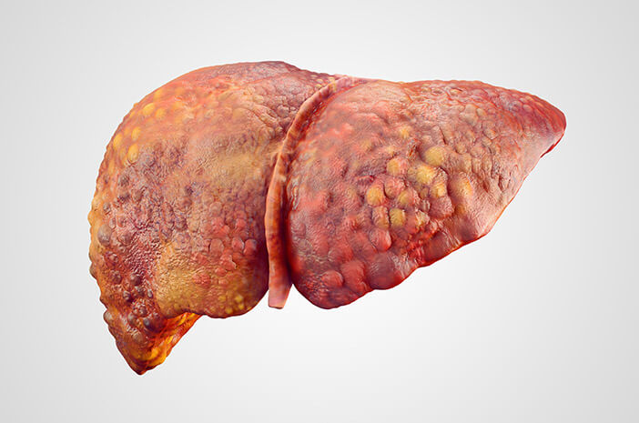

Penyakit Liver

Penyakit liver adalah istilah yang digunakan untuk setiap gangguan pada liver atau hati
sehingga menyebabkan organ ini tidak dapat berfungsi dengan baik. Penyakit liver dapat disebabkan
oleh banyak faktor, seperti infeksi virus, kecanduan alkohol, serta penumpukan lemak di hati.
Penyebab Penyakit Liver
Ada berbagai hal yang bisa menjadi penyebab penyakit liver, antara lain:
Infeksi virus. Hingga saat ini dikenal 8 jenis virus hati, dan virus yang paling jahat adalah virus Hepatitis B (HVB) dan Hepatitis C (HCV).
Masalah sistem kekebalan tubuh. Penyakit hati juga bisa disebabkan karena sistem kekebalan secara keliru menyerang hati.
Penyakit bawaan. Beberapa masalah hati berkembang karena kondisi genetik (yang kamu warisi dari orang tua kamu).
Kanker. Ketika sel-sel abnormal berkembang pada liver, tumor bisa terbentuk. Tumor bisa jinak (non-kanker) maupun ganas (kanker hati).
Konsumsi terlalu banyak zat beracun, seperti alkohol.
Gejala Penyakit Liver
Berapa jenis penyakit liver (termasuk penyakit hati berlemak non-alkoholik) jarang menimbulkan
gejala. Untuk penyakit liver lainnya, gejala yang paling umum muncul adalah penyakit kuning,
menguningnya kulit dan bagian putih mata. Penyakit kuning berkembang karena hati tidak bisa
membersihkan zat yang disebut bilirubin.
Kompilasi Penyakit Liver
Berapa jenis penyakit liver dapat meningkatkan risiko terkena kanker hati.
Selain itu, penyakit liver jika tidak diobati bisa terus merusak organ tersebut.
Sirosis (jaringan parut) bisa berkembang. Seiring waktu, liver yang rusak tidak akan memiliki
cukup jaringan sehat untuk berfungsi. Penyakit liver yang tidak diobati pada akhirnya dapat
menyebabkan gagal hati.
Pencegahan Penyakit Liver
Pengobatan penyakit liver sangat tergantung dari penyebabnya.
Beberapa penyakit liver dapat diatasi dengan perubahan gaya hidup seperti menurunkan berat badan
dan berhenti minum alkohol. Sementara penyakit liver yang lainnya harus ditangani dengan obat-obatan, operasi atau bahkan transplantasi hati.
Yang terpenting dari pengobatan penyakit liver adalah menghindari berkembangnya inflamasi menjadi sirosis yang berbahaya bagi pengidap.
Selain itu, terdapat berbagai tindakan yang dapat dilakukan untuk mencegahnya, antara lain:
1.Tidak berbagi jarum suntik dan melakukan hubungan seksual yang aman.
2.Mencegah terjadinya hepatitis dengan cara mengikuti program vaksinasi virus hepatitis.
3.Menjaga berat badan normal sesuai dengan indeks massa tubuh.
4.Tidak mengonsumsi minuman beralkohol.
5.Konsultasikan dengan dokter sebelum mengonsumsi obat medis maupun obat herbal.